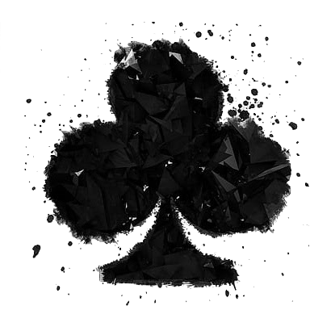

Remind
Kehidupan merupakan sebuah perjalanan yang sarat dengan berbagai pengalaman, tantangan, dan pelajaran. Terkadang kita dihadapkan dengan situasi yang sulit dan penuh ketidakpastian, namun di balik itu semua, kehidupan juga menawarkan banyak keindahan dan kebahagiaan yang tak ternilai harganya. Setiap orang memiliki kisah hidup yang berbeda, namun pada akhirnya, tujuan dari kehidupan adalah untuk mencari makna dan tujuan yang sesuai dengan keinginan dan aspirasi kita.
Dalam perjalanan hidup, kita akan berjumpa dengan berbagai macam orang, membangun hubungan yang penting, dan menemukan tempat di mana kita merasa diterima dan dihargai. Kehidupan juga mengajarkan kita untuk belajar dari kesalahan, menjaga kesederhanaan, dan merayakan keberhasilan kita. Bagaimanapun, hal yang paling penting dalam kehidupan adalah untuk menghargai setiap momen dan menemukan cara untuk memberikan dampak positif pada orang lain dan dunia di sekitar kita.
Dalam kehidupan, terkadang kita juga dihadapkan dengan kegagalan dan rintangan yang sulit diatasi. Namun, hal tersebut adalah bagian dari proses untuk tumbuh dan menjadi lebih kuat. Kita harus belajar untuk bangkit dan terus berusaha meskipun terkadang hal tersebut sulit dilakukan. Di dalam kehidupan, tidak ada jaminan atas apa yang akan terjadi, namun kita dapat belajar untuk menemukan arti dan kebahagiaan dalam setiap momen yang kita alami. Kehidupan juga memberikan kita kesempatan untuk mengejar impian dan meraih tujuan yang kita inginkan, namun hal tersebut memerlukan tekad, kerja keras, dan ketekunan untuk mencapainya.
Sebagai individu yang hidup di dalam masyarakat, kita juga memiliki tanggung jawab untuk memberikan kontribusi positif pada dunia dan membuat perbedaan bagi orang lain. Dalam kesimpulannya, kehidupan merupakan perjalanan yang berharga yang penuh dengan pelajaran dan pengalaman. Kita harus memanfaatkan setiap momen dalam hidup kita untuk tumbuh, belajar, mencapai tujuan, dan memberikan dampak positif pada orang lain.
Aku adalah Barita Permana Pakpahan, seorang seniman dan penyair. Sejak kecil, aku selalu terpesona dengan keindahan kata-kata dan warna-warna yang ada di sekitarku. Aku sering membaca buku puisi dan menggambar di buku catatanku yang selalu aku bawa kemanapun aku pergi.
Namun, aku juga sering dianggap aneh dan dijauhi oleh teman-temanku karena hobiku yang dianggap kurang biasa. Namun, aku tidak pernah merasa minder atau menyerah. Aku terus melukis dan menulis puisi, bahkan ketika ada yang mengolok-olok atau mengejekku.
Aku percaya bahwa seni dan sastra memiliki kekuatan yang luar biasa untuk mempengaruhi dan menginspirasi orang lain. Aku ingin menyebarkan keindahan dan makna di dalam karya-karyaku kepada orang banyak. Aku ingin memperlihatkan bahwa melukis dan menulis puisi adalah sesuatu yang sangat bermakna dan layak dihargai.